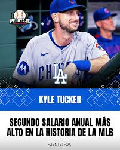
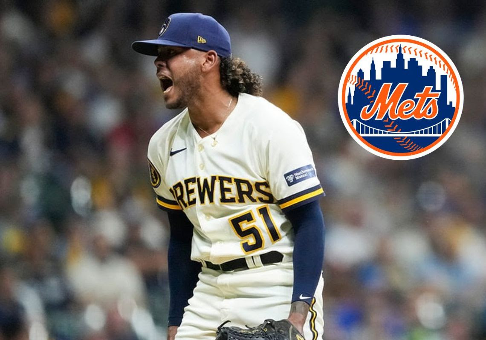

Como cada año en la temporada muerta de la MLB muchos jugadores pasan a vestir colores diferentes a los que defendieron en la campaña anterior. Muchos equipos sacan la chequera a pasear con el objetivo de tapar huecos en su rotación y line-up, otros hacen trueques entregando prospectos por estrellas para verse más competitivos.

Entre los movimientos que más han llamado la atención destaca el fichaje del jardinero Kyle Tucker por los Dodgers por 240 millones de dólares. Sobrevalorado, en mi opinión, para un jardinero de la media que desde hace un tiempo no se acerca a sus mejores números. Otro fichaje importante fue el de Dylan Cease con Blue Jays por USD$ 210 millones.
Freddy Peralta, el robo de la temporada baja

Precisamente el equipo de Queens protagonizó el fichaje más sobresaliente al traer al derecho Freddy Peralta a Citi Field en un cambio con Milwaukee Brewers. ¿Por qué es el mejor movimiento? Se trata de uno de los pitchers más consistentes de los últimos tres años, lanzando 165 o más entradas y superando los 200 ponches.
Estadística Cy Young
En 2025 tuvo un año soberbio con marca de 17-6 y 2.70 de PCL que le valieron para meterse en el top 5 para el Cy Young de la Liga Nacional.
Pero lo mejor es que Peralta entrará en su último año de contrato con un precio de ganga (USD$ 8 millones). Sin dudas, el presidente de operaciones David Stearns logró una obra maestra táctica.
Incógnitas de la Agencia Libre

A menos de un mes del Spring Training, aún quedan agentes libres de gran calibre. Salta a la vista el zurdo Framber Valdez, vinculado con Mets y Orioles, o el cañonero Eugenio Suárez, quien viene de una temporada de 49 jonrones y aún no tiene gorra que ponerse.
El Caso Arráez
¿De verdad tan subvalorada está la habilidad para embasarse? ¿En serio nadie quiere un tipo capaz de conectarte más de 170 hits por temporada? Entrando a febrero, la situación de Luis Arráez es el mayor misterio de la liga.